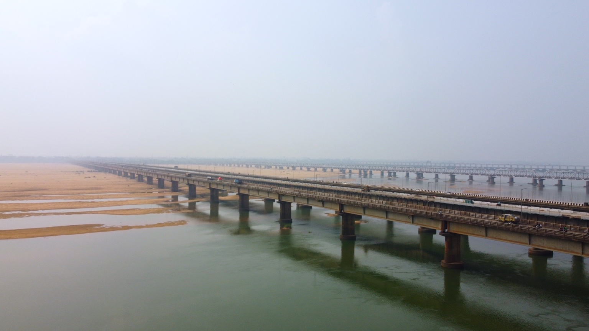

From the first idea to the final frame.
Documentary filmmaking, cinematography and production support for stories that need to be made well — wherever the work takes us.
Built for the field.
I work across documentary, editorial, branded and corporate productions — from developing a story and finding access to filming it in the field.
For international productions working in India, I can also step in as a local production partner: research, fixing, locations, crew and on-ground coordination.
The work I do.
Documentary Filmmaking
Short and long-form documentaries, human stories, journalism and observational films.
Cinematography
Visual storytelling for documentaries, editorial productions, branded films and corporate work.
Field Production
On-ground production support for international filmmakers, journalists, agencies and production companies working in India.
Documentary Fixing
Research, contributors, access, locations, logistics, local knowledge and production coordination.
Branded Documentaries
Films that tell a genuine story around a brand, its people, customers, products or ideas.
Corporate Films
Films about businesses, industries, technology, processes, people and innovation.
Location Scouting
Finding distinctive locations and the people, environments and visual details needed to tell the story.
Drone / Aerial
Aerial cinematography, drone-based visual documentation and specialized aerial production.
More ways to make the film.
Photography
Photography for editorial, documentary, corporate and behind-the-scenes needs.
360° Video Production
Actual 360-degree video capture and production for immersive experiences and documentation.
Video Editing
Documentary and branded video editing, from story assembly through a polished final cut.
Production support in India.
For teams coming to India, the production can be as important as the film itself. I can help bridge the gap between an international brief and the realities of working on the ground.
That can mean finding the right contributors, scouting locations, building a local crew, coordinating travel and logistics, or stepping in to shoot and direct.

One story. Different needs.
Research, contributors, access, locations, recce and production planning.
Direction, cinematography, interviews, observational filming and local production.
Footage organization, editorial support and video editing when required.
A clear, considered film built around the story rather than the equipment.
Have a story that needs to be made?
Tell me what you're working on, where you're shooting and what you need on the ground.
Let's talk →Back to About ↗